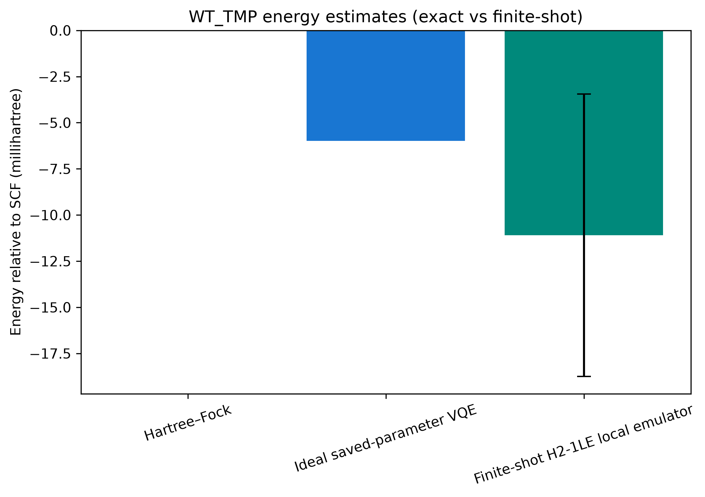

One WT trimethoprim active-space electronic-structure workflow, evaluated on a local noiseless Quantinuum H2-1LE emulator.

This is not a binding free energy, mutation comparison, physical-hardware calculation, or clinical prediction.